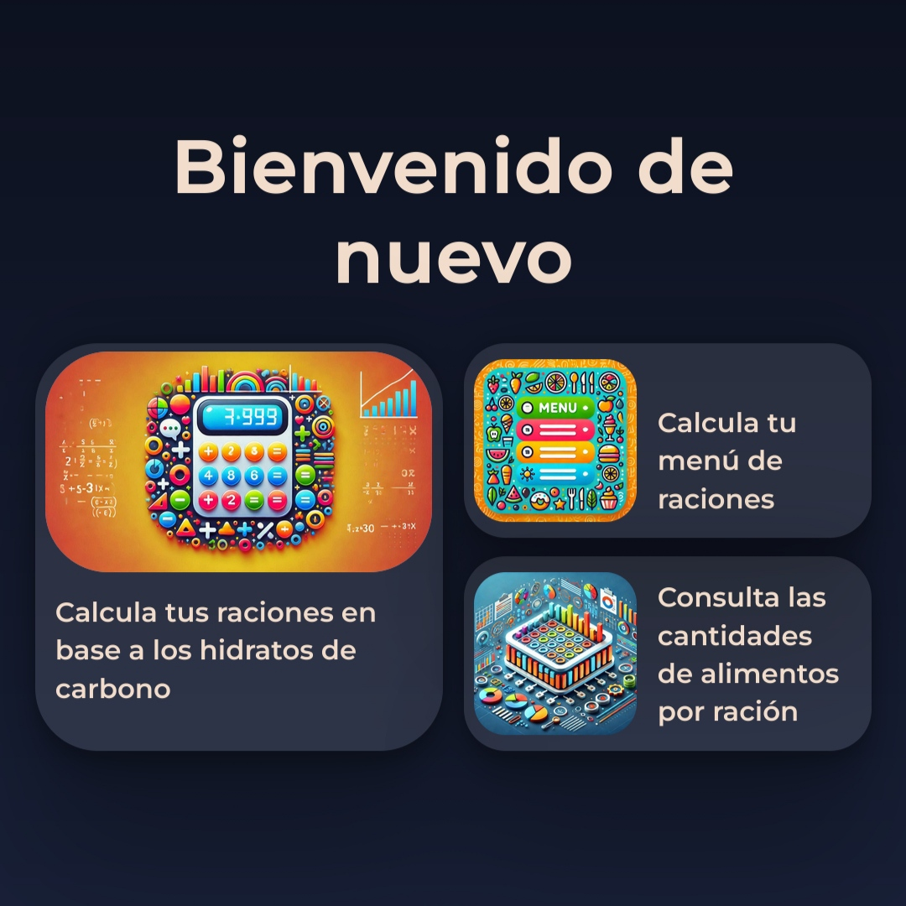
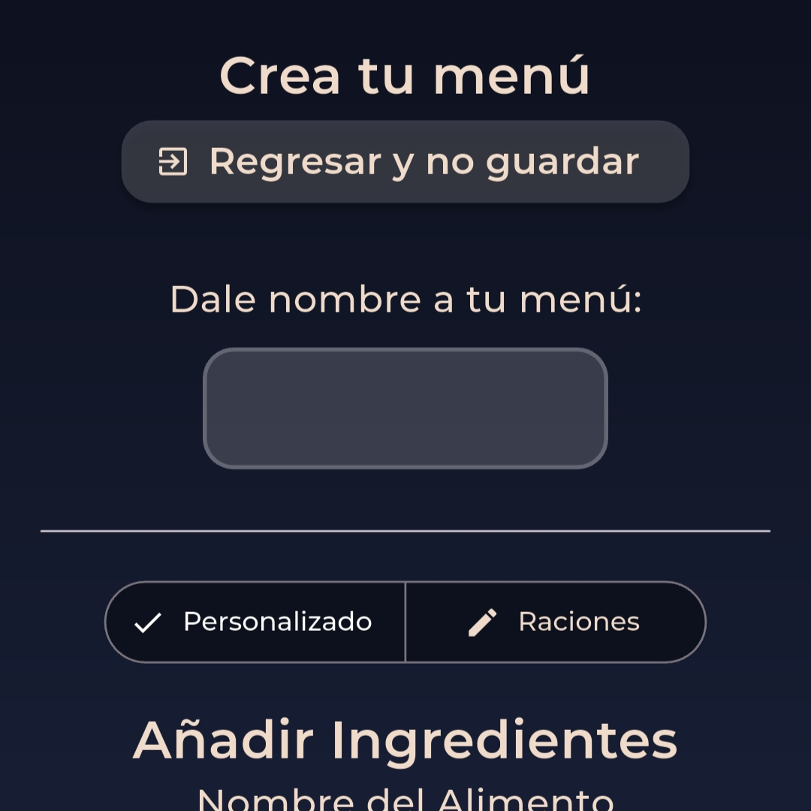
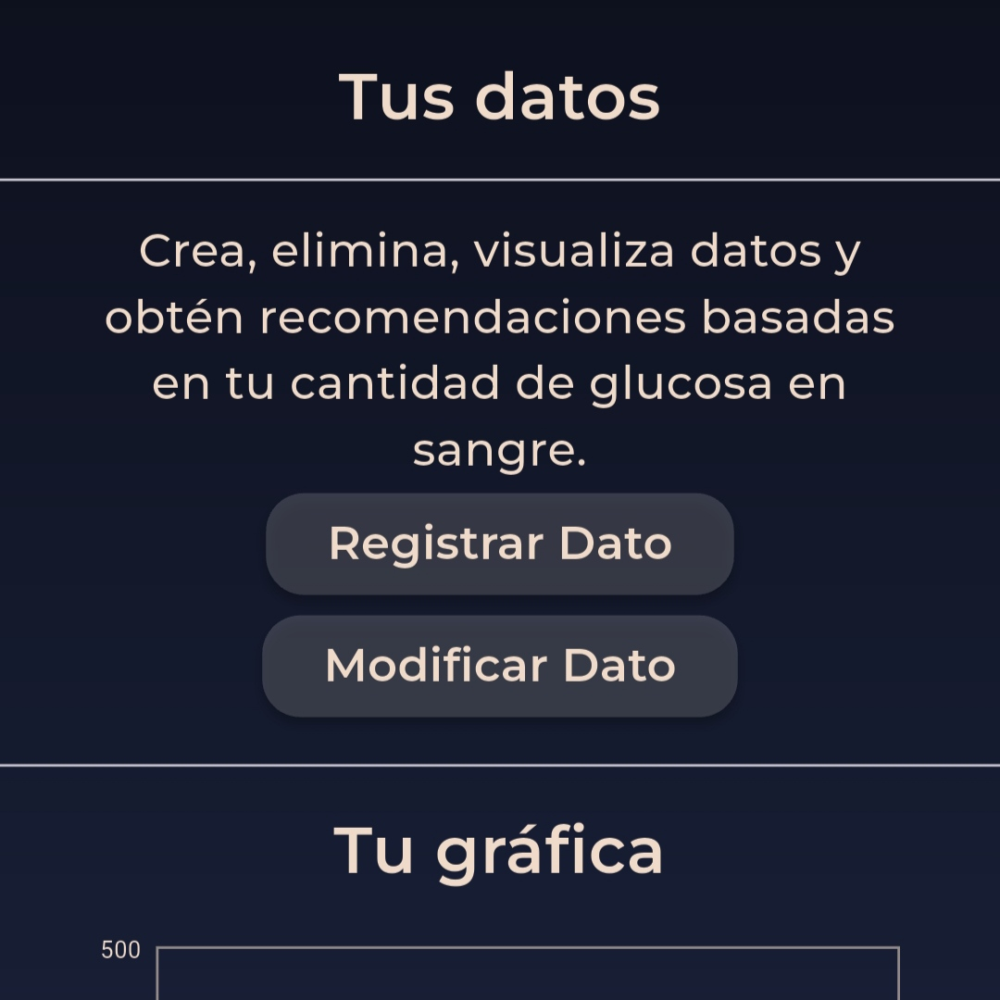

DiabetesAssis posee una interfaz viva e intuitiva, se actualiza cada poco tiempo y está adaptada a la mayoría de dispositivos móviles. Además, en su versión App, cada característica de la aplicación contiene unos primeros pasos guiados.
DiabetesAssis no tiene pérdida, realiza los cálculos rápidamente y es eficiente. No contiene anuncios intrusivos y está diseñada para acceder a lo que buscas eficientemente.
DiabetesAssis tiene una versión web de código abierto y totalmente gratuita. En algunas versiones, contiene anuncios no invasivos. Las versiones de DiabetesAssis planean ser gratuitas permanentemente.
Puedes escoger la versión de DiabetesAssis que más se adapte a tu dispositivo. Si usas iOS (iPhone, iPad...) usa su versión web. Si eres usuario de Android, puedes instalar su versión APK o acceder a su versión de prueba de Google Play Store, así como usar su versión web.
Es recomendable comprobar las actualizaciones de la aplicación en esta propia web cada semana, pues se actualiza frecuentemente.
Versión actual: 1.8.1 - 10/05/2025